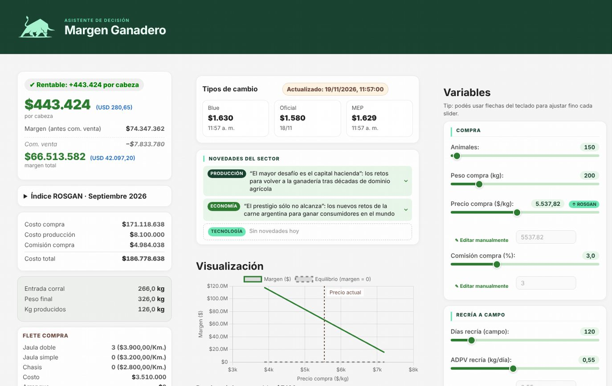

Margen Ganadero
Saber si conviene comprar hacienda para engorde llevaba horas de planilla, y había que rehacer el cálculo cada vez que cambiaba un precio.
- Simulador que calcula el margen por cabeza y total, y muestra el precio máximo rentable de compra.
- Precarga precios reales: índices ganaderos de Rosgan y dólar oficial, blue y MEP.
- API en funciones serverless con caché, deduplicación de pedidos y respaldo ante fallas de las fuentes externas.
- Compara hasta 3 escenarios y los exporta a PDF. 26 tests sobre el cálculo de márgenes y fletes.
- JavaScript
- Node.js
- Vercel serverless
- Express
- Chart.js
- CSP / HSTS